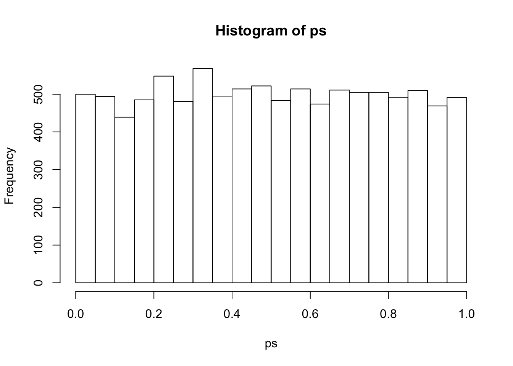
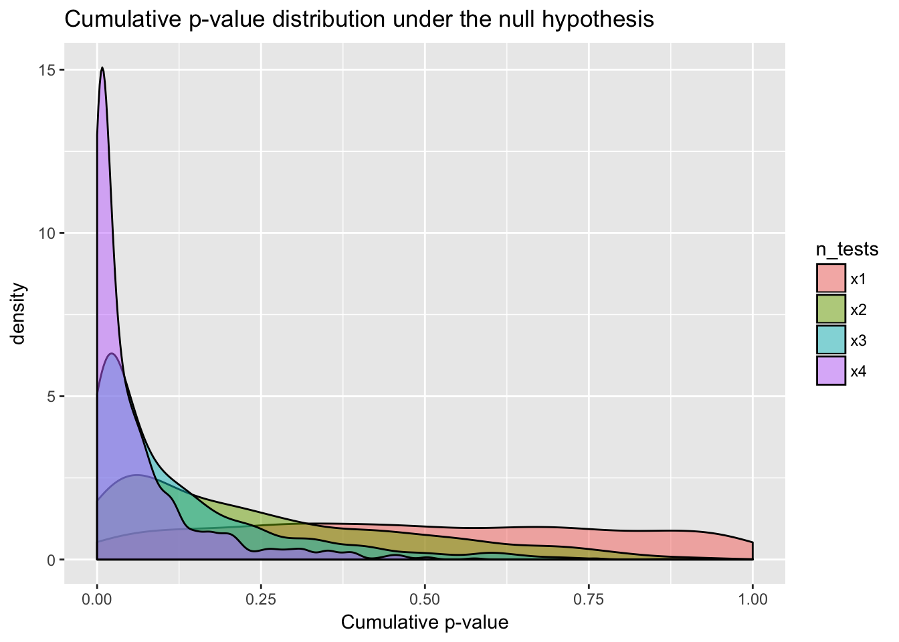

Download the Rmd notebook for this example
EJ Wagenmakers started an interesting debate last night with a twitter poll on p-values. Some responses suggested you can multiply p-values from several tests to create a sort of cumulative p-value that is the joint probability of the null hypothesis.
I also used to believe that you could multiply p-values, but am now a bit embarassed at my misunderstanding, common as it is. The p-value is not the probability that the null hypothesis is true, it is the probability of obtaining the current (or more extreme) values under the null hypothesis. This important distinction means you cannot multiply p-values to obtain the joint probability of several tests.
First, I’ll write a simple function to generate two sets of n samples from a normal distribution with the same mean and SD, then return the p-value for a t-test.
suppressMessages( library(tidyverse) )
nullp <- function(n) {
a = rnorm(n)
b = rnorm(n)
t = t.test(a, b)
t$p.value
}I’ll run this simulation 10000 times with samples of n = 1000 to get a good distribution of p-values under the null hypothesis. The histogram shows that this is a unifrom distribution.
ps <- replicate(10000, nullp(1000))
hist(ps)
Then sample 1000 p-values from this distributions once, twice, thrice, and whatever the word is for four times. This should convince you that the cumulative p-value cannot provide the joint probability of the null hypothesis for multiple tests.
data.frame(
"x1" = sample(ps, 1000),
"x2" = sample(ps, 1000) * sample(ps, 1000),
"x3" = sample(ps, 1000) * sample(ps, 1000) * sample(ps, 1000),
"x4" = sample(ps, 1000) * sample(ps, 1000) * sample(ps, 1000) * sample(ps, 1000)
) %>%
gather("n_tests", "cum_p", x1:x4) %>%
ggplot(aes(cum_p, fill=n_tests)) +
geom_density(alpha = 0.5) +
labs(x ="Cumulative p-value",
title="Cumulative p-value distribution under the null hypothesis")